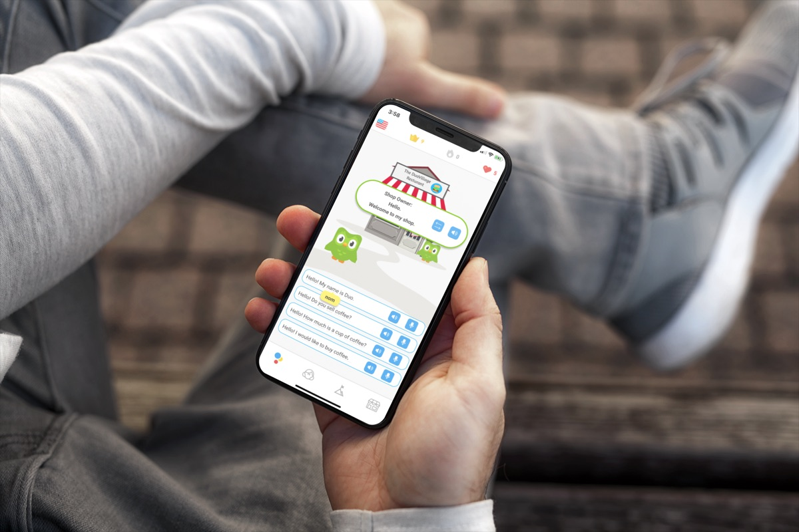
Explore your village
Learn through everyday scenarios like shopping and meeting new people, in a village shaped around how you learn.
A concept redesign of Duolingo that gives learners conversation practice for real situations, without the social anxiety that keeps them away from it.
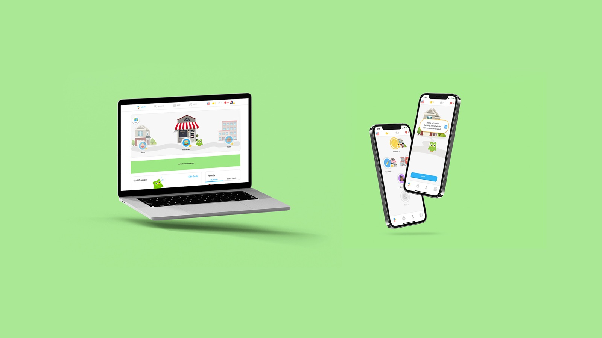

Learn through everyday scenarios like shopping and meeting new people, in a village shaped around how you learn.
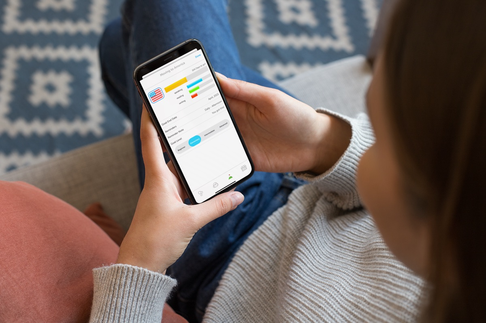
Set goals, or plan for a trip: where you're going, what you'll do there, and the level you want to reach before you leave.
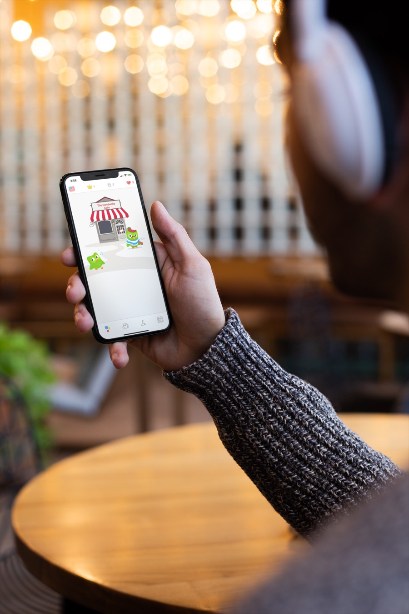
Every language gets its own village, rooted in its place and culture, with characters who remember you and always have something to say.
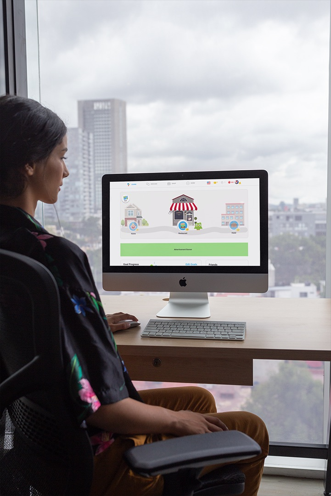
Pick up where you left off on any device. The village goes where you go.
COVID-19 cancelled Duolingo's live events, the one place learners could practise speaking with real people.
Duolingo's mission is to make education free, fun and accessible to everyone. Many learners valued its live events because they gave them practice with real conversations that the app couldn't. When the pandemic shut those events down, my group and I set out to find what could replace them.
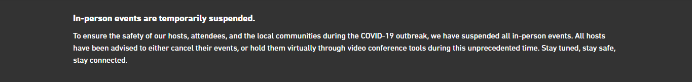
Duolingo users, past and present, answered our survey
prefer to study a new language alone rather than in a group
were interested in voice or video chat; the rest preferred text
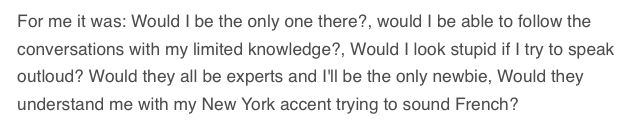
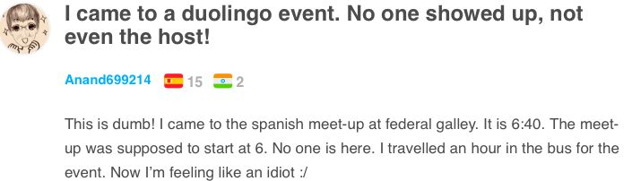
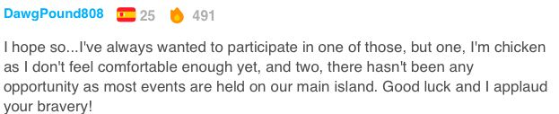
"The amount of activation energy needed to overcome social anxiety was too high."
Luis von Ahn, co-founder of Duolingo, on why a pairing feature users asked for didn't work in testing
Duolingo had already A/B tested a pairing program and it failed, even though users had asked for it. Research it cited from the US military links the fear of looking stupid with a poorer ability to learn a language. Our first idea wasn't meeting a real user need or adding business value, so we went back to what users were actually missing.
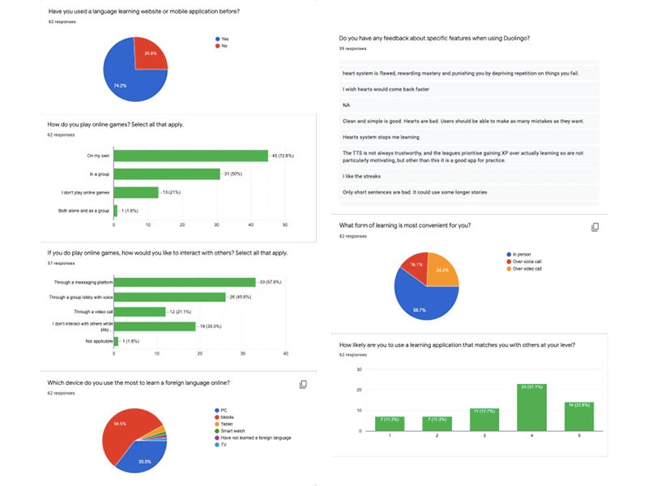
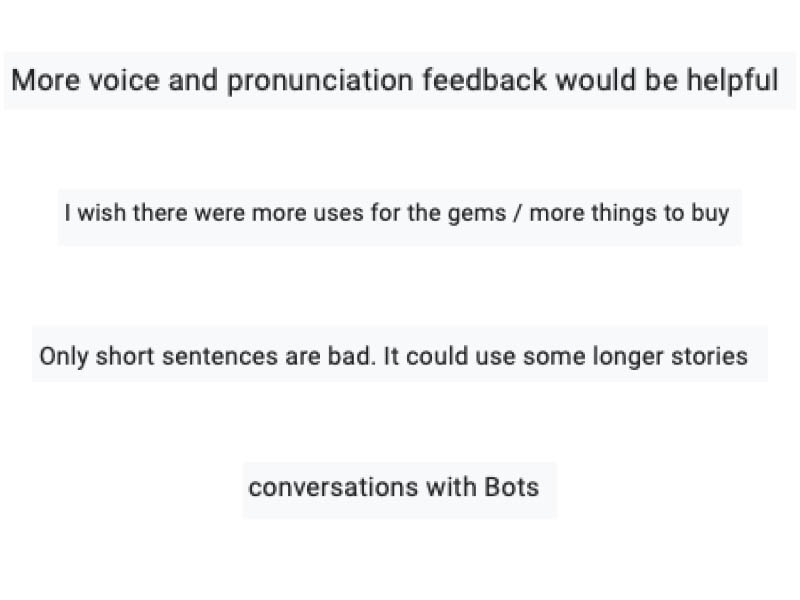
Duolingo is built for solo learners but focuses on listening and writing. Exercises like "type what you hear" never ask you to say "I'd like to order a coffee" or "Where's the train station?", and there's no conversation partner to practise with.
Goals are measured only in XP, which isn't personal: everyone learns for a different reason. And the avatar shop offered just three outfits, leaving the game side of Duolingo underused.
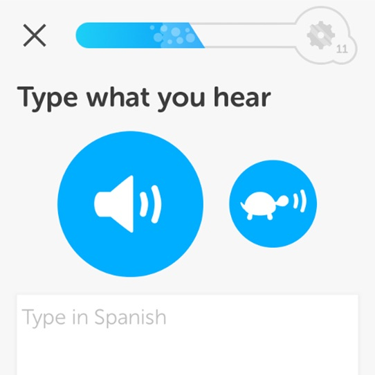
Élise Couture
A French graduate student in Paris, learning English because she's moving to the USA next year. She also wants to visit Japan.
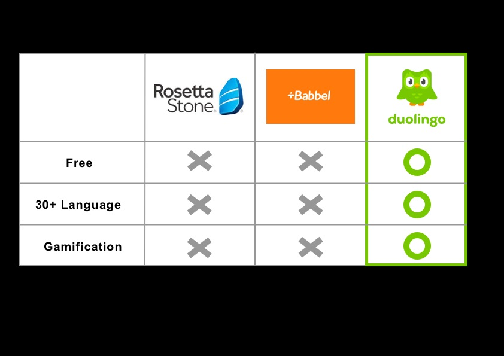
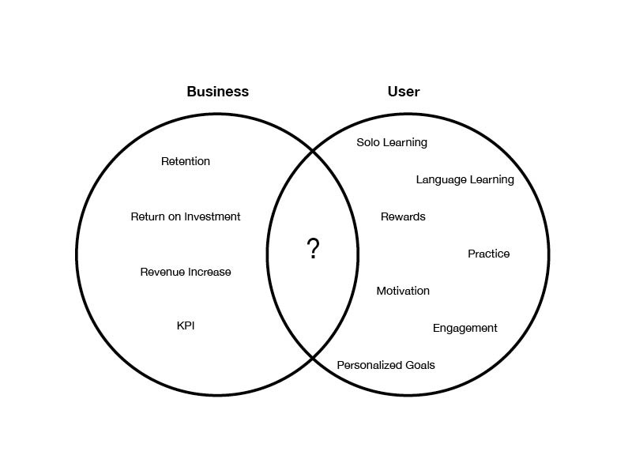
Practice for real situations that doesn't add social anxiety, and personal options that keep them motivated.
Higher engagement and retention, and more revenue from stronger rewards and goal features.
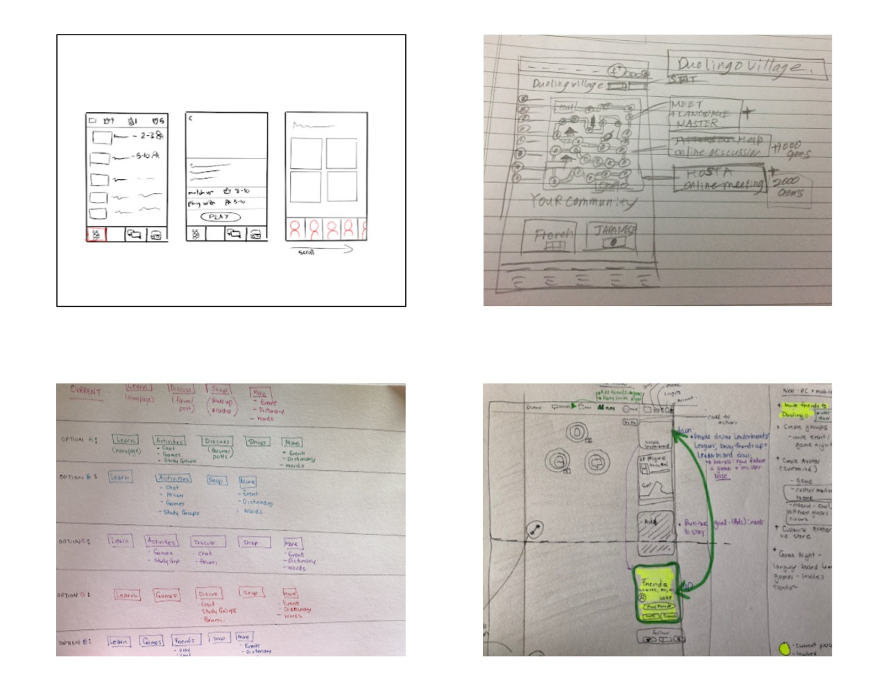
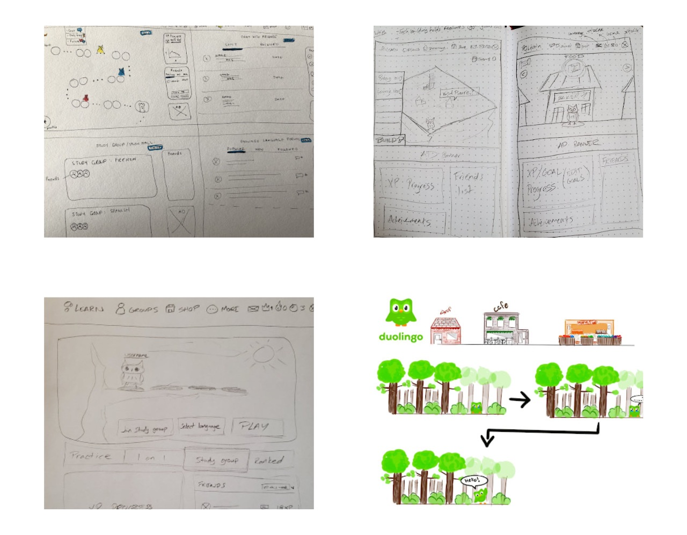
Our solution: a village to learn in, where you practise with characters powered by an AI chatbot instead of strangers.
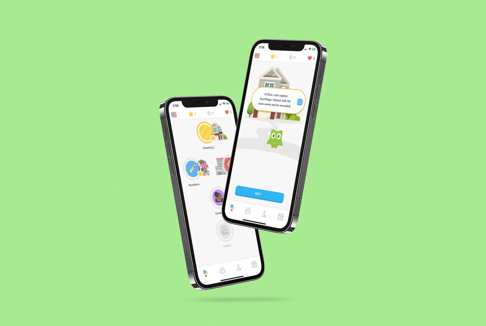
The mobile app
Lessons01 / 14
The old level bubbles are attached to places, like a café or a restaurant, so every lesson happens somewhere real.
Tips and practice work as before. Begin Mission takes what you just learned into a real scenario, different every time.
"Our first task is to buy a cup of coffee. Let's go!"
The village path leads to the restaurant, where a character is waiting.
Characters are powered by a chatbot. Tap translate to see what they said in your language, or the speaker to hear it again.
Pick a reply from a set of answers, and tap any word to see what it means.
Tap the microphone and speak your answer instead of tapping it, for extra XP.
"I'm sorry, I don't sell coffee. Would you like tea instead?" Conversations can go somewhere new, like real ones do.
"Bye Élise. Have a nice day." The shop owner knows your name.
XP for the lesson, the combo and the mission. Carry on to the next mission or head back to your lessons.
A new Goals tab shows each goal, the days left, and progress in speaking, reading and writing.
"Moving to America" has a deadline, daily reminders and a note to keep you going.
Choose the level you want to reach, from beginner to advanced.
Choose when you want to get there. Reminders and notifications follow your timeline.
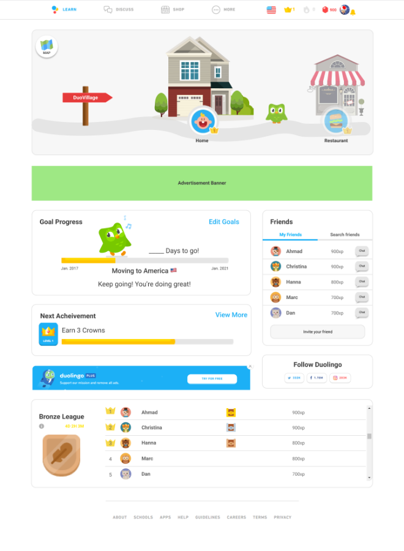
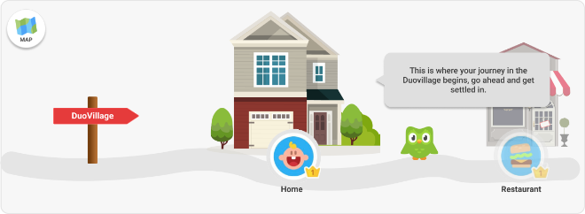
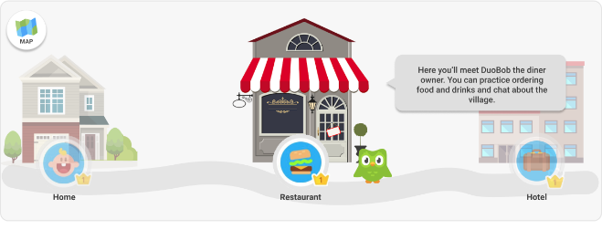
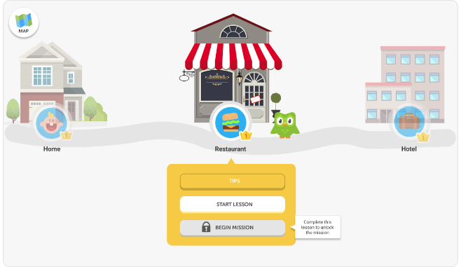
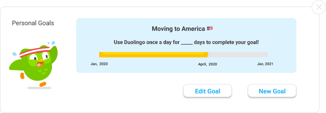
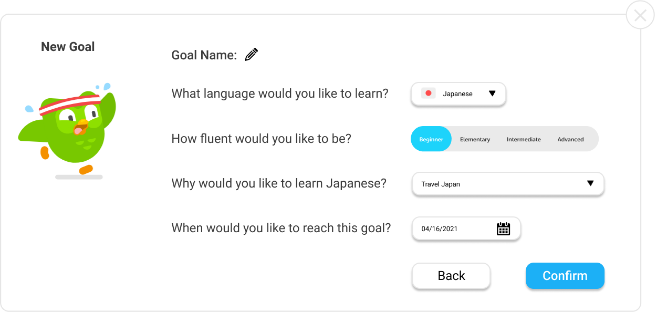
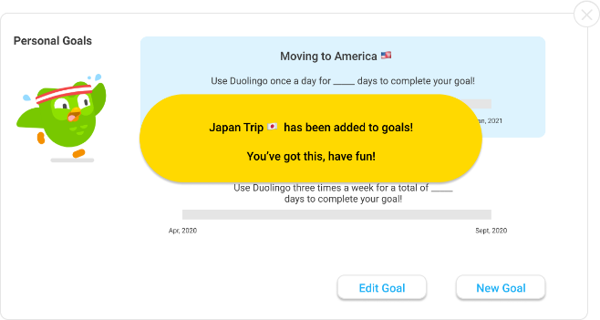
DuoVillage is a student concept and is not affiliated with Duolingo. Duolingo, Duo and related marks belong to Duolingo, Inc. Lifestyle mockups use stock templates.